- 有连接：只有在确认通信对端存在时才会发送数据，从而可以控制通信流量的浪费，应用程序可以不用顾虑提供尽职服务的IP网络上可能发生的各种问题，依然可以转发数据
- 可靠：检验和、序列号、确认应答、超时重传、连接管理
- 避免大量丢包：滑动窗口机制、流量控制、拥塞控制
- 提高性能：延时确认应答、捎带应答、快速重传
- 面向字节流：创建一个TCP的socket，同时在内核中创建一个发送缓冲区和一个接收缓冲区。发送数据时，tcp根据头部将除头部外的数据写入发送缓冲区，如果发送的字节数太长，会被拆分成多个TCP的数据包发出，如果发送的字节数太短，就会先在缓冲区里等待，等到缓冲区长度差不多了，或者其他合适的时机发送出去。接收数据时，数据也是从网卡驱动程序到达内核的接收缓冲区，然后应用程序可以调用read从接收缓冲区拿数据。缺陷：应用层数据粘包，可以采用特殊字符间隔(如http，数据中如果有这个特殊字符就要进行转义)、数据定长(保证每次都按固定大小读取即可，可能需要补位)、在应用层协议头中定义数据长度方式来解决(如http、udp)
协议格式
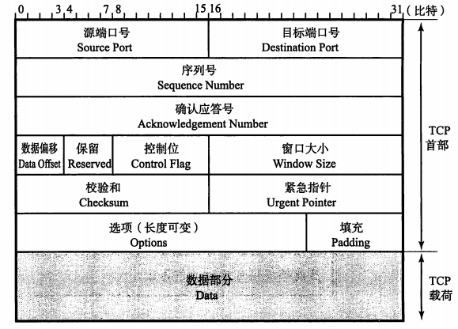
32位序列号：每发送一次数据，序列号就会累加一次该数据的字节数大小，序列号是由随机数作为初始值，通过SYN包传递给主机（SYN和FIN包并不携带数据，但会作为一个字节增加对应的序号）
32位确认应答号：下一次应该收到数据的序列号，发送端收到这个确认应答以后可以认为在这个序号以前的数据都被正常接收
4位数据偏移：可也看作TCP首部长度，该字段长4位，单位为4字节，不包括选项的话，数据偏移量最小设置5，说明TCP首部是5*4=20位，最大15*4=60位
4位保留位：一般全0，为了以后扩展使用
8位置控制位：
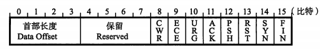
CWR：用于IP首部ECN字段，ECE标志为1时，则通知对方已将拥塞窗口缩小
ECE：用于IP首部ECN字段，收到IP首部ECN为1时，则置为1，通知通信对方，发送网络拥塞
URG：紧急指针是否有效
ACK：确认号是否有效
PSH：提示接收端应用程序立刻从TCP缓冲区把数据读走，为0时则先进行缓存
RST：出现异常，重新建立连接，复位报文段
SYN：请求建立连接，同步报文段
FIN：通知对方，本端关闭，结束报文段
16位窗口大小：通知从相同TCP首部的确认应答号所指位置开始能接收的数据大小，如果窗口为0，则表示可以发送窗口探测，以了解最新窗口大小，这个数据必须是1个字节，TCP首部40字节选项中还包含了一个窗口扩大因子M，实际窗口大小是窗口字段的值左移M位
16位校验和：和UDP一样还需要校验伪首部，区别在于TCP校验和无法关闭
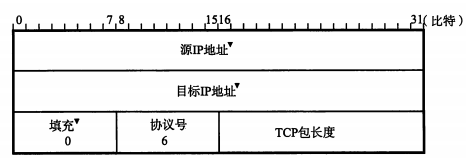
16位紧急指针：在URG为1时才有效，指向紧急数据末尾，也就是说从数据首位到紧急指针所指向的位置为紧急数据。一般在暂时中断通信或中断通信的情况下使用，此外紧急指针也用作表示数据流分段的标志
选项：含有最大段长度情况、窗口扩大因子、时间戳字段（区分新老序列号）等
确认应答机制
TCP将每个字节的数据都进行了编号（初始值是在建立连接以后由随机数生成，计算则是每一字节加一）即为序列号，每一个ACK都带有对应的确认序列号，如果确认应答，说明数据已经成功到达对端，反之，则数据丢失的可能性很大，在一定时间没有等到确认应答，发送端就可以认为数据已经丢失，并进行重发。也可能对方已经收到数据只是返回的确认应答在途中丢失，这种情况下也会进行重发，接收端在发现有相同数据到达时会丢弃数据
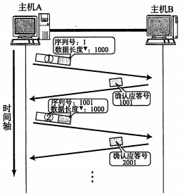
数据长度并未写入TCP首部，通过IP首部中数据包长度-IP首部长度-TCP首部长度
超时重传机制
在重发数据之前，等待确认应答到来的那个特定时间间隔，如过超过了这个时间仍未收到确认应答，发送端将进行数据重发。TCP在每次发包时都会计算往返时间及其偏差，将这个往返时间和偏差相加，超时重传的时间就是比这个总和要稍大一点的值
在BSD的Unix以及Windows系统中，超时都以0.5s为单位进行控制，因此超时重传时间都是0.5s的整数倍，偏差最小值也是0.5s，所以最小重发时间至少为1s，不过，由于最初的数据包还不知道往返时间，所以重发时间一般设置为6s左右，若数据被重发以后还是收不到确认应答，则再次重发，等待确认应答的时间将会以2倍、4倍的指数函数延长，当达到一定重发次数后，就会判断为网络或对端主机异常，强制关闭连接
连接管理机制
TCP利用首部控制字段来管理TCP连接
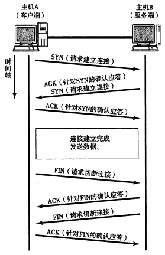
在建立TCP连接的同时，也可以确定发送数据包的单位（MSS最大消息长度）两端的主机在发出建立连接的请求时，会在TCP首部中写入MSS选项，告诉对方自己的接口能够适应的MSS的大小，然后会在两者之间选择一个较小的值使用
TCP在传送大量数据时，是以MSS的大小将数据进行分割发送，进行重发时也是以MSS为单位
保活机制
sysctl -a | grep keepalive
默认：通信双方7200s没有数据往来，则每隔75s发送一个保活探测数据报，要求对方进行响应
若连续9次没有得到响应，则认为连接断开，并将socket状态置为CLOSE_WAIT
三次握手/四次挥手
三次握手：客户端通过向服务器端发送一个SYN来创建一个主动打开，并进入状态SYN_SENT，客户端把这段连接的序号设定为随机数A，服务器端应当为一个合法的SYN回送一个SYN/ACK，并进入状态SYN_RCVD。ACK的确认码应为A+1，SYN/ACK包本身又有一个随机产生的序号B。最后，客户端再发送一个ACK，并进入状态ESTABLISHED，此时包的序号被设定为A+1，而ACK的确认码则为B+1。当服务端收到这个ACK的时候，就完成了三次握手，并进入状态ESTABLISHED
如果服务器端接到了客户端发的SYN后回了SYN-ACK后客户端掉线了，服务器端没有收到客户端回来的ACK，那么，这个连接处于一个中间状态，既没成功，也没失败。于是，服务器端会重发SYN-ACK(超时重传)，一定次数后还是没有收到ACK就会从未完成连接队列中删除套接字
三次握手原因：如果是两次握手，那么假设客户端第一次握手的SYN在网络中延迟了，超时后客户端未收到服务器的确认报文，就会重传一份SYN，然后服务端返回确认报文，TCP连接建立，接着若客户端最早发送的SYN到达服务端，服务端也回复ACK，然后又建立一个TCP连接，而且这个服务端一直在等待客户端数据造成大量资源开销。还有种情况是，若客户端收到SYN后，回复ACK丢包，也会造成多余的资源开销。同时三次握手可以满足两个条件：A确定B能收发信息，B确定A能收发信息
四次挥手：
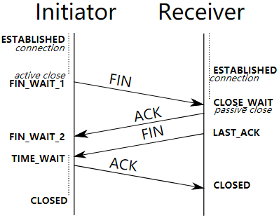
客户端主动调用close或shutdown(fd, WR)时，向服务器发送FIN，同时进入FIN_WAIT_1，表示客户端不再发送数据。服务器收到FIN包后立马回复ACK，同时进入CLOSE_WAIT状态。客户端收到ACK后进入FIN_WAIT_2。由于客户端只是关闭了写端，还能读取数据，服务端可以继续发送数据，在完成数据传送后，将发送一个FIN，同时进入LAST_ACK，表示服务端不再发送数据。客户端收到FIN后，回复ACK，同时进入TIME_WAIT，2MSL后进入CLOSED状态。服务端收到ACK后进入CLOSED状态
2MSL：cat /proc/sys/net/ipv4/tcp_fin_timeout 查看msl的值，Centos7上默认配置的值是60s，保证在两个传输方向上的尚未被接收或迟到的报文段都已经消失（否则服务器立刻重启，可能会收到来自上一个进程的迟到的数据，但是这种数据很可能是错误的）
同时也是在理论上保证最后一个报文可靠到达（假设最后一个ACK丢失，那么服务器会再重发一个FIN，这时虽然客户端的进程不在了，但是TCP连接还在，仍然可以重发LAST_ACK）
TIME_WAIT/CLOSE_WAIT
TIME_WAIT是主动关闭方出现的状态，如果一台主机出现大量的TIME_WAIT，证明这台主机大量的主动关闭了连接，常见于爬虫服务器，可以调整TIME_WAIT时间，或者地址重用允许套接字绑定使用的中地址端口，使用setsockopt()设置socket描述符的选项SO_REUSEADDR为1，表示端口释放后立即就可以被再次使用int opt = 1; setsockopt(listenfd, SOL_SOCKET, SO_REUSEADDR, &opt, sizeof(opt));
CLOSE_WAIT是被动关闭方的状态，
一般来说服务器上出现大量的CLOSE_WAIT状态，原因就是服务器没有正确的关闭socket，导致四次挥手没有正确完成，只需要加上对应的close即可解决问题
滑动窗口
TCP以1个段为单位，每发一个段进行一次确认应答的处理，包的往返时间越长通信性能就越低，为解决这个问题，TCP引入了窗口这个概念，我们可以一次发送多条数据，并行压缩等待时间，也就是说，在发送了一个段以后不必一直等待确认应答，而是继续发送
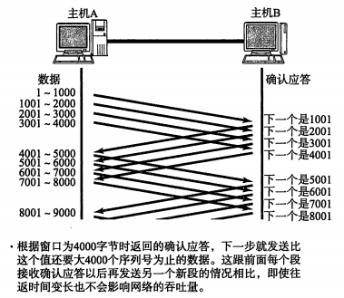
窗口大小就是指无需等待确认应答而可以继续发送数据的最大值，窗口内的数据即使没有收到确认应答也可以发送出去，发送端在收到窗口左沿第一段数据的确认应答后，窗口左沿才向右移动
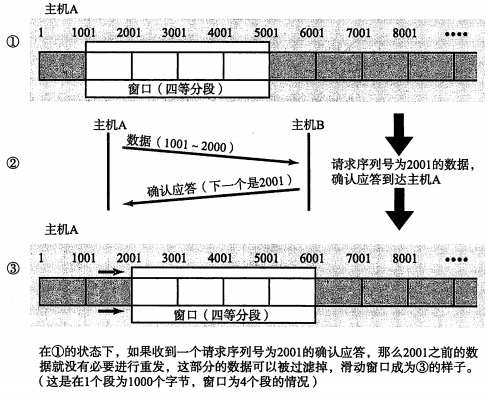
丢包情况
情况一：数据包抵达，ACK丢失
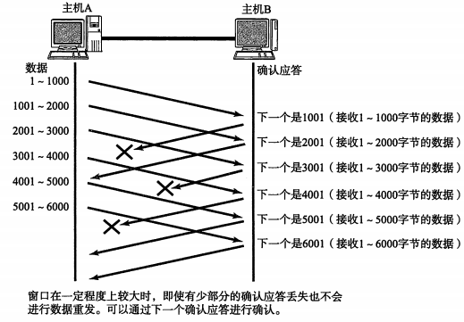
这种情况下，部分ACK丢了并不要紧，因为可以通过后续的ACK进行确认，如果第一条ack(下一个是1001)丢失，主机A收到第二条ack(下一个是2001)，则主机A就可以推断数据2001之前的数据都顺利到达不需要重发
情况二：数据包丢失
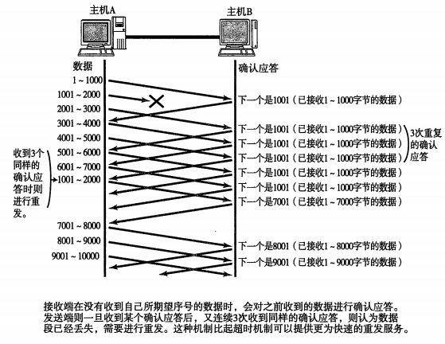
如果1001~2000数据包丢失，则发送端会一直收到序号为1001的确认应答，在窗口比较大，又出现报文段丢失的情况下，同一个序号的确认应答将会被重复不断地返回，而发送端如果连续3次收到同一个确认应答，就会将其所对应的数据进行重发，这个时候接收端收到了1001之后，再次返回的ACK就是7001了（因为2001 - 7000）接收端其实之前就已经收到了（这里是选择重传协议，类似还有停止等待协议、回退n步协议），被放到了接收端操作系统内核的接收缓冲区中，这种机制叫快速重传
流量控制
接收端处理数据的速度是有限的，如果发送端发的太快，导致接收端的缓冲区被打满，这个时候如果发送端继续发送就会造成丢包，继而引起丢包重传等等一系列连锁反应，因此TCP支持根据接收端的处理能力来决定发送端的发送速度。接收端主机向发送端主机通知自己可以接收数据的大小，于是发送端会发送不超过这个限度的数据，TCP首部中，又一个专门的字段用来通知窗口大小，接收主机将自己可以接收的缓冲区大小放入这个字段中通知给发送端，这个字段的值越大，说明网络的吞吐量越高
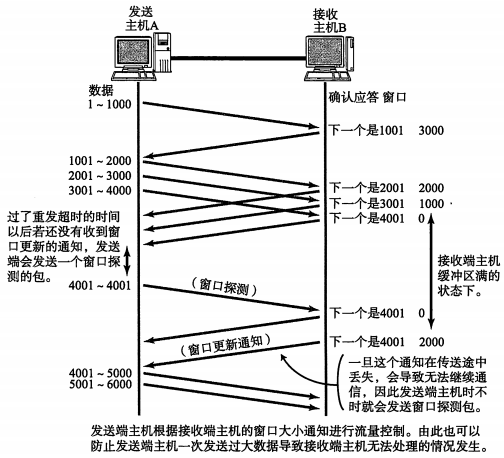
拥塞控制
虽然TCP有了滑动窗口机制，能够高效可靠的发送大量的数据，但是如果在刚开始阶段就发送大量的数据，仍然可能引发问题，为了解决此问题，TCP引入慢启动机制，先发少量的数据，摸清当前的网络拥堵状态，再决定按照多大的速度传输数据
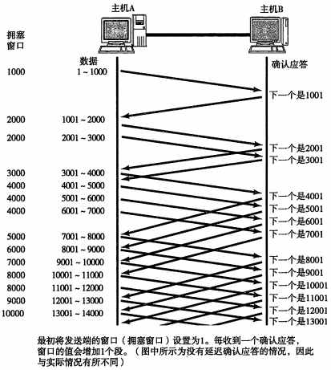
首先，为了在发送端调节所要发送数据的量，定义了一个叫做“拥塞窗口”的概念，将这个拥塞窗口的大小设置为1个数据段(1MSS)发送的数据，之后每一次确认应答，拥塞窗口就增加，在发送数据包时，将拥塞窗口的大小与接收端主机通知的窗口大小做比较，然后选择其中较小的值，发送比其还要小的数据量。不过，随着每次往返，阻塞窗口也会以1、2、4等指数函数的增长，可能会导致网络拥塞的发生，为了不增长的那么快，因此不能使拥塞窗口单纯加倍，所以引入了慢启动阈值的概念，只要拥塞窗口的值超出了这个阈值，每收到一次确认应答时，只允许以
（1个数据段字节数/拥塞窗口字节数）*1个数据段字节数的比例放大拥塞窗口
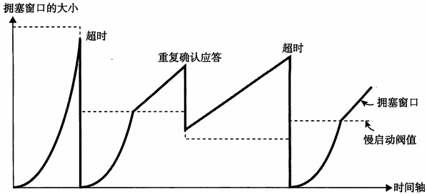
TCP的通信开始时，并没有设置相应的慢启动阈值，而是在超时重发时，才会设置为当时拥塞窗口（实际已发送但未收到确认应答的数据量）一半的大小，由重复确认应答进行高速重发控制时，慢启动阈值的大小被设置为当时窗口大小的一半，然后将窗口大小设置为该启动阈值+3个数据段的大小（这种网络拥堵相较于超时重发要轻一些）
Nagle算法
TCP中为了提高网络利用率，经常使用一个叫Nagle的算法。发送端即使还有应该发送的数据，但如果这部分数据很少的话，则进行延迟发送的一种处理机制，仅在满足下列任意一种条件下才能发送数据
- 已发送的数据都已经收到确认应答时
- 可以发送最大段长度(MSS)的数据时
延时确认应答
接收数据的主机如果每次都立刻回复确认应答的话，可能会返回一个较小的窗口，因为刚接收完数据，还没来得及从缓冲区取出。为此，可以在接收数据后不立即返回确认应答，而是延迟一段时间的机制。
- 在没有收到2*最大段长度的数据（和操作系统有关）为止不做确认应答
- 其他情况下，最大延迟0.5s（有些操作系统为0.2s，时间越小、CPU的负荷会越高，性能也下降；反之时间越长可能导致超时重发，窗口在只有1个数据段时，性能也会下降）
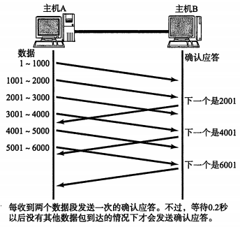
捎带应答
在一些通信中TCP的确认应答和回执数据可以通过一个包发送，通过这种机制，可以使收发的数据量减少。接收数据以后如果立刻返回确认应答，就无法实现捎带应答，而是将所接收的数据传给应用处理生成返回数据以后再进行发送请求为止，延时确认应答时实现捎带应答的基础
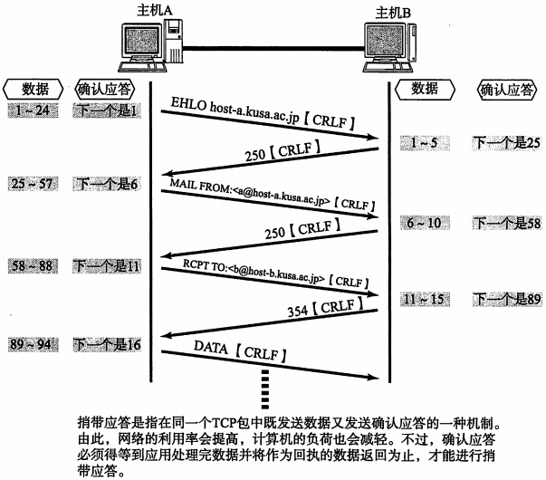